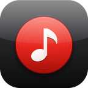
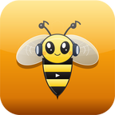
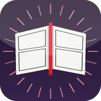
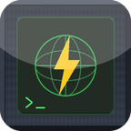

samcejko's apps for iOS 6 (Archive)
https://minhtridotnet.github.io/repo/samcejko/
https://minhtridotnet.github.io/repo/samcejko/
Free apps for jailbroken iOS 6 devices (the iPad 2, iPad 3, iPhone 4S and iPhone 5 era): a web browser for today's websites, Twitch, YouTube, TikTok, Instagram, Spotify, YouTube Music with your Apple Music library, Kick, GeForce NOW, game streaming from your own PC, Minecraft: Java Edition, an AI chat, a code editor and the original Vine app brought back with diVine's videos. Each app carries its own modern TLS stack, so a system from 2012 talks to today's servers. English and Czech, most of them open source.
Cydia, Melder: Sources → Edit → Add. Enter the address below, or tap the button of your package manager.
https://minhtridotnet.github.io/repo/samcejko/
Add to Cydia Add to InstallerUsing Melder is HIGHLY RECOMMENDED instead of Cydia. Install it from http://repo.k0.tel/
20 of 42 tweaks available in this archive
If you have existing Samcejko tweaks installed on your device, install Redeb from http://repo.legacyios.com/ and Melder from http://repo.k0.tel, go to Terminal in Melder, type redeb, y, and then the number that corresponds with bundle starting with com.samcejko. The .deb file will be in /var/mobile/Documents/Redeb/debs. Unfortunately, the way to get it to the computer is too complicated, so it's too hard to mention here. But if you were able to get it to PC (Via LocalSend or SSH), upload it to sites like http://catbox.moe and send the files link to me (minhtridotnet) on GitHub or via my Reddit account (Any_Orange_7050). Contribution to the files will make the archive more complete!

MuzikaYouTube Music with your Apple Music library, lyrics and downloads0.1.4›
WaspMusicBee Remote: control desktop playback, lyrics and queue1.0.1›
MangieManga reader and offline chapter downloader (MangaDex API v5) for iOS 5–101.2.1›
LynxieUltra-fast, GSM-friendly, Zero-JS text-first web browser for iOS 5–101.0.0›This is a partially archived Samcejko's repository. Because of the drama happened in Discord, he decided to quit and delete everything that he made, and many people were unprepared for that. Even though his tweaks are mostly vibe-coded, most of them work, which is still valuable for our Legacy iOS Community. This archive is the attempt to get the most available tweaks as possible, so that people can use it. Unfortunately, the source code for Samcejko's GitHub plus arm64 apps/tweaks are now considered mostly lost media (unless someone forked it, if yes please send me). The paragraph below is the original repo's description.
Everything here is free and stays free. If an app is useful to you, you can support the development with a coffee; it also helps keep the server behind some of the apps running. Compatibility is listed for each package. Sixify, GFN6, Wikie, AI Chat, Gramify, Twitcher, Kicker, Muzika and Artlight support iOS 5–10; MC6 supports iOS 6–10. Other legacy packages retain their own supported versions. They install into /Applications: do not keep an app's IPA from GitHub installed at the same time as its package from here. Most apps also come as arm64 packages for 64-bit devices with iOS 15 and newer and a rootless jailbreak (Sileo, Zebra; they install into /var/jb/Applications), with the same iOS 6 look.
Unofficial apps by samcejko, not affiliated with or endorsed by Twitch, Google, Apple, TikTok, Instagram, Meta, Spotify, Kick, NVIDIA, Mojang, Microsoft, OpenRouter, Vine, X, diVine or the Moonlight, Sunshine and Apollo projects.